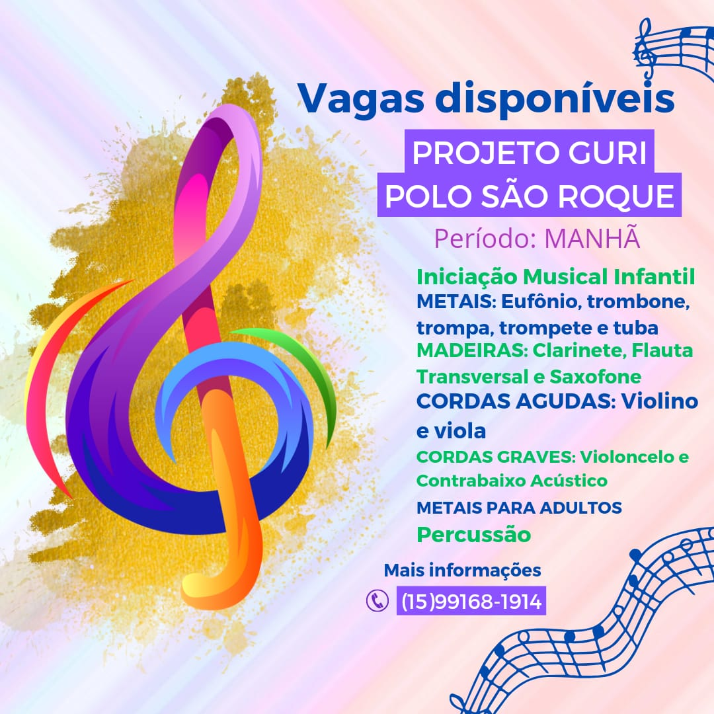
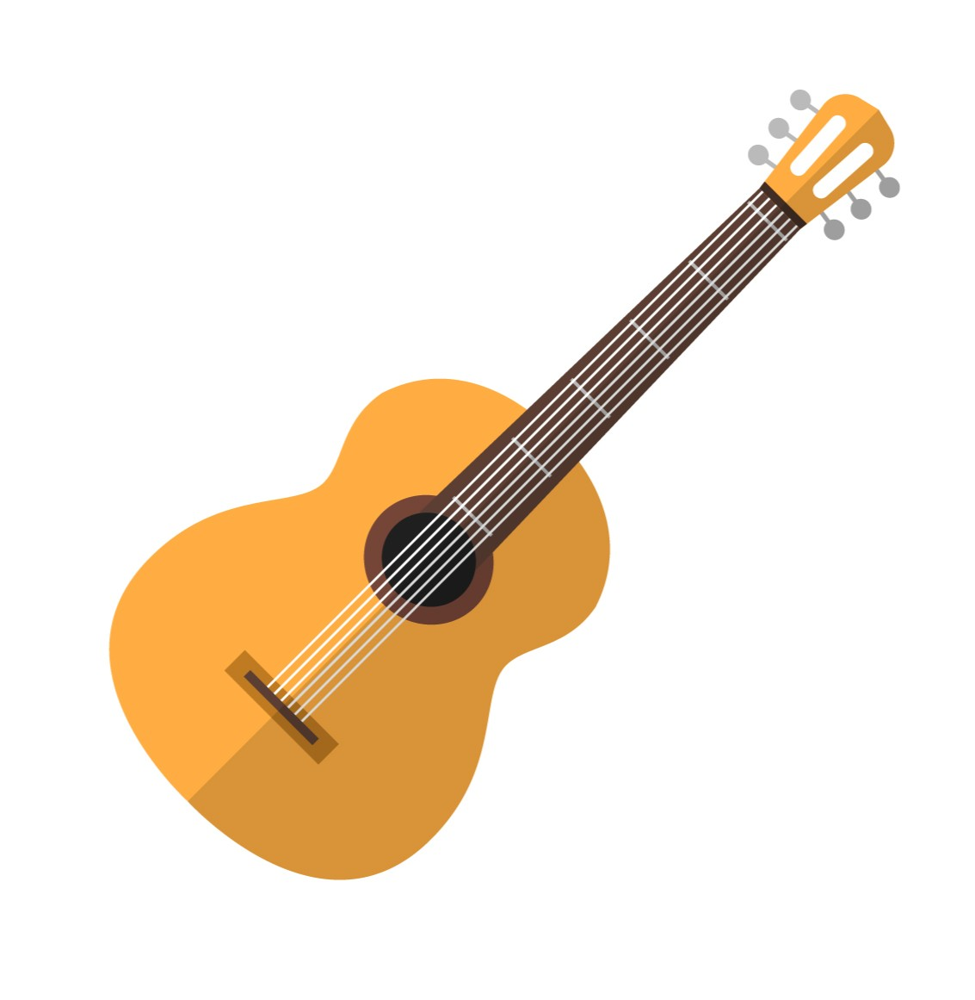
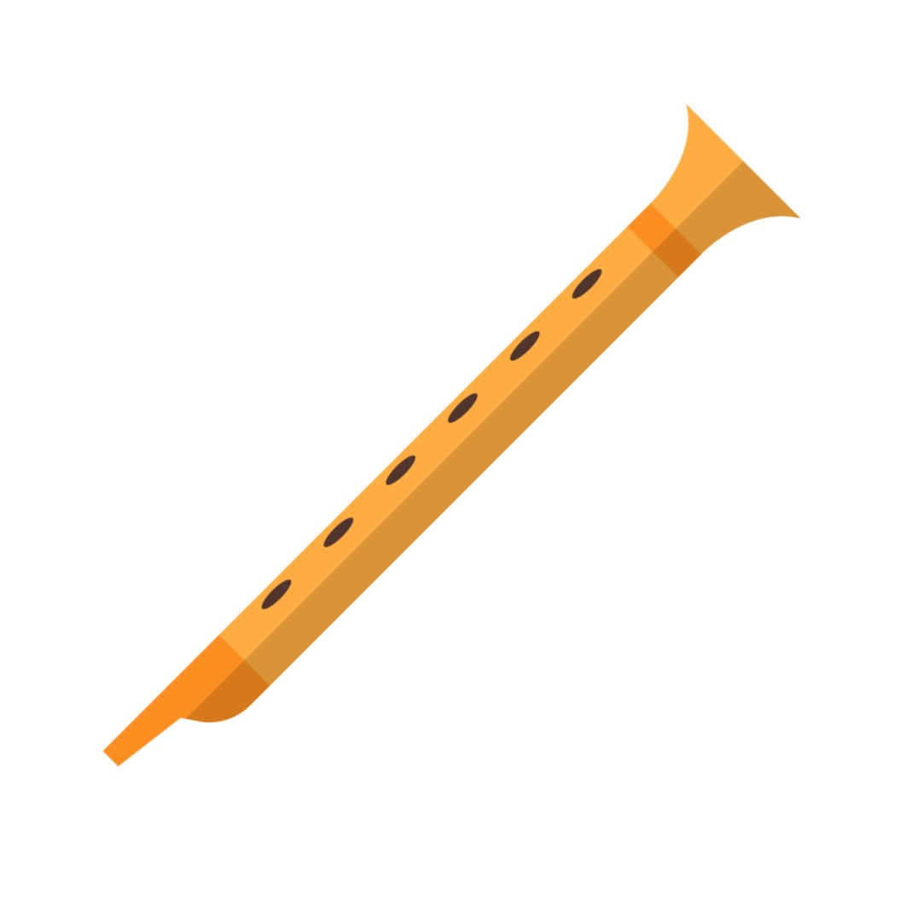
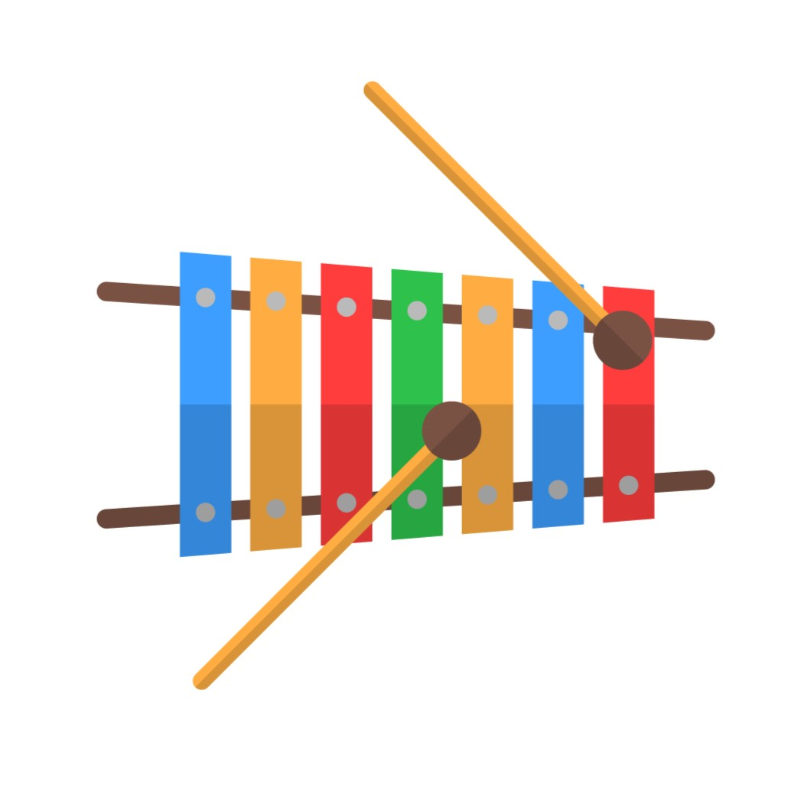

imagem
O Guri é um programa de educação musical do Governo do Estado de São Paulo, gerido pela Santa Marcelina Cultura. Referência em formação musical, o Guri oferece mais de 100 mil vagas para crianças e adolescentes por ano gratuitamente e está presente em mais de 500 polos de ensino em todo o estado de São Paulo. Desde sua criação, em 1995, o programa já beneficiou mais de 1 milhão de crianças e adolescentes, além de suas famílias e comunidades.
imagem2

Polo São Roque
Tenha acesso aos mais variados cursos do nosso projeto! Desde aulas de instrumentos de sopro (Flauta, trombone, trompa), percussão (Bateria, tambor, caxixi) e cordas! (Violão, violino e viola).



Inscreva-se para poder desfrutar do melhor do nosso curso e ampliar seu aprendizado!